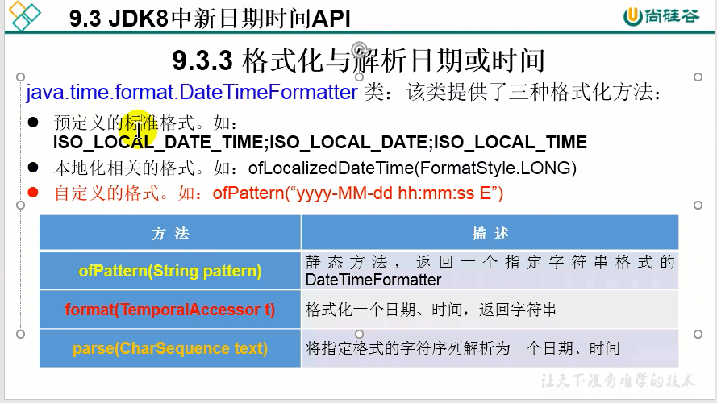
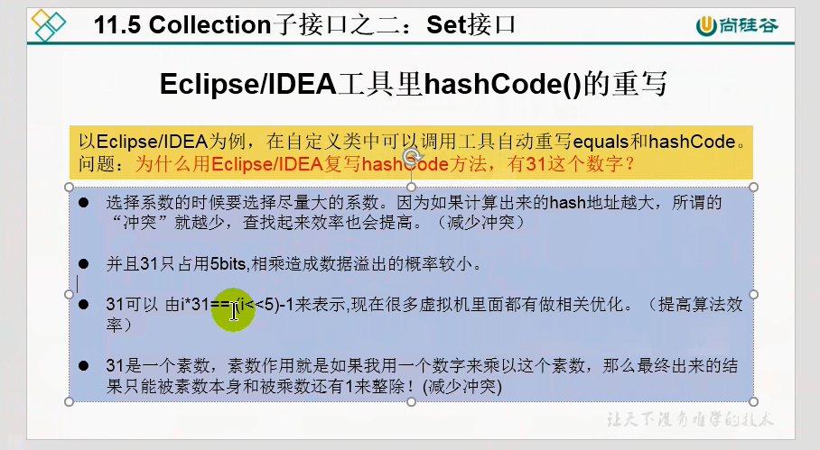

整理合集
面试
Java
String为什么不可变？
StringBuilder和StringBuffer的区别？
- StringBuilder和StringBuffer都继承自AbstractStringBuilder,在源码中：AbstractStringBuilder实现了Appendable和CharSequence方法，具体的存储结构是
char[] value数组，并且定义了一个数组的最大值为Integer.MAX_VALUE-8，不管是在初始化还是扩容过程中超过这个容量都会抛出异常。 - 扩容过程：
- 先调用
ensureCapacity(minCapacity)方法，如果minCapacity是负数，则改方法没有任何作用，只会简单的返回。 - 如果是正数，则继续调用
ensureCapacityInternal（）的private方法，在该方法中调用Arrays.copyOf()方法实现真正的扩容。 Arrays.copyOf()方法中调用newCapacity方法，扩容后的容量为原来的value.length+2和需要的容量的最小值。- 如果扩容的容量太大，超过了规定的最大值，也就是
Integer.MAX_VALUE-8，则比较需要的容量minCapacity和最大值的大小，如果minCapacity超过Integer.MAX_VALUE的值，则直接抛出OutOfMemory异常。否则返回minCapacity和规定最大值的较大值。
- 先调用
- StringBuffer：since jdk1.0。所有的方法都有同步效果，或者是加了同步关键字，或者是通过方法之间的相互调用达到了同步的效果。
- StringBuilder:since jdk1.5。没有同步效果，效率高于StringBuffer.
- 默认创建的数组大小都是16或者原来的大小加16.
- StringBuilder和StringBuffer都继承自AbstractStringBuilder,在源码中：AbstractStringBuilder实现了Appendable和CharSequence方法，具体的存储结构是
在以下4种情况下，finally块不会被执行：
- 在finally语句块第一行发生了异常。（因为在其它行，finally块还是会等到执行）
- 在前面的代码中用了System.exit(int)已退出程序。exit()是带参函数；若该语句在异常语句之后，finally块会执行
- 程序所在的线程死亡
- 关闭CPU
数据结构的基本概念
数据：信息的载体，是描述客观事物属性的数、字符及所有能输入到计算机中并被计算机程序识别和处理的符号的集合
数据对象：具有相同性质的数据元素的集合，是数据的一个子集。
数据元素：数据的基本单位，通常作为一个整体进行考虑和处理
数据项：构成数据元素的不可分割的最小单位。
循环队列：关键是取余(%MaxSize)
front指针移动：
Q.front = (Q.front+1)%MaxSizerear指针移动：
Q.rear = (Q.rear+1)%MaxSize队列长度：
(Q.rear-Q.front+MaxSize)%Maxsize队空条件：
Q.front==Q.rear队满条件：
Q.front==Q.rear1
2
3public class A{
}解决方法：
- 方法1：牺牲一个存储单元： 少存放一个元素；判断队满：
Q.front==(Q.rear+1)%MaxSize - 方法2：增加一个计数变量
- 方法3：增加tag标识（队空是由于出队引起的，队满是由于入队引起的）；队空条件：
Q.front==Q.rear&&tag==0；队满条件：Q.front==Q.rear&&tag==1
- 方法1：牺牲一个存储单元： 少存放一个元素；判断队满：
栈的出栈序列个数：
$$
f(n)=\frac{n+1}{C_{2n}^n}
$$
递推公式：
$$
f(k)=f(k-1)+f(n-k)
$$栈的应用：
- 括号匹配：
- 初始一个空栈，顺序读入括号
- 若是右括号，则与栈顶元素进行匹配
- 若匹配，则弹出栈底元素并进行下一个元素
- 若不匹配，则该序列不合法
- 若是左括号，则压入栈中
- 若全部元素遍历完毕，栈中非空则序列不合法
- 表达式求值：
- 中缀转前缀：
- 中缀转后缀：
- 数字直接加入后缀表达式
- 运算符时：
- 若为“（”，入栈
- 若为“）”，则依次把栈中的运算符加入后缀表达式，直到出现“（”，并从栈中删除“（”
- 若为+，-，*，/，
- 栈空，入栈
- 栈顶元素为“（”，入栈
- 高于栈顶元素优先级，入栈
- 否则，依次弹出栈顶运算符，直到一个优先级比它低的运算符或“（”为止
- 遍历完成，若栈非空依次弹出所有元素
- 括号匹配：
矩阵的压缩存储
压缩存储：指多个值相同的元素只分配一个存储空间，对零元素不分配存储空间
特殊矩阵：指具有许多相同矩阵元素或零元素，并且这些相同矩阵元素或零元素的分布具有一定的规律性
特殊矩阵的压缩存储：找出特殊矩阵中值相同的矩阵元素的分布规律，把那些呈现规律性分布、值相同的多个矩阵元素压缩存储到一个存储空间上
三对角矩阵的数组下标：
$$
3*(i-1)-1+(j-i)+1+1-1
$$
化简后为：
$$
2i+j-3
$$
若k已知，求i,j?
$$
i= \left\lfloor (k+1)/3+1\right\rfloor
$$$$
j=k+3-2i
$$
稀疏矩阵：矩阵元素个数S相对于矩阵中非零元素的个数T来说非常多，即S>>t的矩阵称为稀疏矩阵
三元组：(行标，列标，值)
树的度：树中最大度数称为树的度
度数为2的树与二叉树的区别：
- 度数为2的树最少有3个节点 二叉树可以有0个节点
- 度数为2的有序树的孩子节点的左右是相对的
满二叉树：每一层的满
完全二叉树：前一层是满二叉树
二叉排序树：左子树节点的关键字均小于根节点，右子树节点均大于根节点
平衡二叉树：左子树和右子树的深度之差不超过1
中序遍历非递归算法：
- 初始时，依次扫描根节点的所有左侧节点并将它们一一进栈
- 出栈一个节点，访问它
- 扫描该节点的右孩子节点并将其进栈
- 依次扫描右孩子节点的所有左侧节点并一一进栈
- 反复该过程直到栈空为止
二叉树的层次遍历：
- 初始时将根入队并访问根节点，然后出队
- 若有左子树，则将左子树的根入队
- 若有右子树，则将右子树的根入队
- 然后出队，访问该节点
- 反复该过程直到队列空为止
树的线索化：（线索链表、线索二叉树）
- 若无左子树，则将左指针指向其前驱节点
- 若无右子树，则将右指针指向其后继节点
树的存储结构
- 双亲表示法：采用一组连续的存储空间来存储每个节点，同时在每个节点中增设一个伪指针，指示双亲节点在数组中的位置。根节点的下标为0，其伪指针域为-1。
- 孩子表示法：将每个节点的孩子节点都用单链表连接起来形成一个线性结构，n个孩子具有n个孩子链表。
- 孩子兄弟表示法：以二叉链表作为树的存储结构，又称二叉树表示法。（左孩子右兄弟表示法） （节点第一个孩子的节点指针，节点值，节点下一个兄弟节点指针）
树的遍历
无中序遍历
树的先根遍历序列和二叉树的先根遍历序列相同。
树的后根遍历序列和二叉树的中根遍历序列相同。
森林的遍历
先序和中序遍历
森林的中序遍历序列与森林对应二叉树的中序遍历序列相同
并查集
一种简单的集合表示。
通常用树的双亲表示法作为并查集的存储结构。
二叉排序树
二叉排序树的中序遍历序列是一个递增的有序序列
二叉排序树的删除：
用中序序列的直接后继代替被删除节点
平衡二叉树（AVL树）
高度为h的最小平衡二叉树的节点数$N_h$
递推公式：$N_h=N_{h-1}+N_{h-2}+1 （N_0=0,N_1=1）$
平衡二叉树的判断：利用递归的后序遍历。
哈夫曼树
树的带权路径长度：$WPL=\sum_{i=0}^{n}w_il_i$
哈夫曼树：也称最优二叉树，含有N个带权叶子节点带权路径长度最小的二叉树
n个叶子节点的哈夫曼树的节点总数为2n-1,度为2的节点数为n-1。
前缀编码：没有一个编码是另一个编码的前缀
哈夫曼树并不唯一，所以每个字符对应的哈夫曼编码也不唯一，但带权路径长度相同且最优
图
图的存储结构
- 邻接矩阵法（空间复杂度为$O(n^2)$）,适用于稠密图
- 设图G的邻接矩阵为A，矩阵运算$A^n$的含义：$A^n[i][j]$表示从顶点$v_i$到顶点$v_j$的长度为n的路径条数
- 邻接表法
- 为每个顶点建立一个单链表存放与它相邻的边
- 适用于稀疏图
- 十字链表
- 有向图的一种链式存储结构
- 边表+顶点表
- 十字链表例子：

- 邻接多重表
- 无向图的一种链式存储结构
- 邻接多重表例子：


图的广度优先搜索
代码：
应用：可以利用图的广度优先搜索求无权图单源最短路径问题。
无权图单源最短路径问题

图的深度优先搜索

遍历与连通性问题
在无向图中，在任意节点出发进行一次遍历（调用一次BFS或DFS），若能访问全部节点，说明该无向图是连通的。
在无向图中，调用遍历函数的次数为连通分量的个数。
以上两个结论只适用于无向图，在有向图中都不成立。
图的应用
最小生成树
生成树：连通图包含全部顶点的一个极小连通子图
对于带权的无向联通图$G=(V,E),G$的所有生成树当中边的权值最小的生成树为G的最小生成树(MST)。
Prim算法：（贪心算法）

该算法的时间复杂度为$O(|V|^2)$，因此适用于稠密图
克鲁斯卡尔算法：

时间复杂度为$O(|E|log|E|)$,所以更加适用于稀疏图。
单源最短路径问题
地杰斯特拉方法

地杰斯特拉算法不适用于含有负权值的边
Floyd方法
B树vsB+树

散列查找
散列函数
一个把查找表中的关键字映射成该关键字对应的地址的函数。
KMP算法
求next数组：

KMP算法

排序算法
插入排序
直接插入排序
最好情况下复杂度为$O(n)$，最坏和平均情况下复杂度为$O(n^2)$,空间复杂度为$O(1)$，稳定。适合链表。
折半插入排序
$O(n^2)$,稳定，只适用于顺序存储
希尔排序（缩小增量排序）
最坏情况下：$O(n^2)$ 最好情况:$O(n^{1.3})$
不稳定。顺序存储。 辅助空间：$O(1)$
交换排序
冒泡排序
基本思想：
假设待排序表长为n，从后往前（从前往后）两两比较相邻元素的值，若为逆序（即$A[i-1]>A[i]$），则交换他们直到序列比较结束。
最好：$O(n)$
最坏和平均：$O(n^2)$
空间复杂度：$O(1)$
稳定，顺序存储和链式存储
快速排序
选取基准。
一次划分会将一个元素pivot放置到它最终的位置上。
不稳定。
$O(high-low+1)$

最好、平均空间复杂度$O(log_2n)$
最好、平均空间复杂度$O(nlog_2n)$
初始基本有序或逆序：
最坏情况空间复杂度$O(n)$
最坏时间复杂度$O(n^2)$

选择排序
直接选择排序
一趟排序会将一个元素放置在最终的位置上。

时间复杂度与初始序列无关：$O(n^2)$
空间$O(1)$
顺序存储和链式存储
堆排序
大根堆和小根堆

时间复杂度：$O(nlog_2n)$
空间复杂度：$O(1)$
不稳定，顺序存储（链式存储）


归并排序
二路归并排序
时间复杂度：$O(nlog_2n)$ 稳定 顺序存储和链式存储
空间复杂度：$O(n)$
基数排序
不基于比较，借助“分配”和“收集”两种操作堆单逻辑关键字进行排序，分为最高位优先（MSD）和最低位优先(LSD)

时间复杂度：$O(d(n+r))$
空间复杂度：$O(r)$
稳定，不基于比较
内部排序算法比较
| 排序算法 | 时空复杂度 | 稳定性 | 一趟排序的特点 | |||
|---|---|---|---|---|---|---|
| 直接插入排序 | ||||||
| 折半插入排序 | ||||||
| 希尔排序 | ||||||
| 冒泡排序 | ||||||
| 快排 | ||||||
| 直接选择排序 | ||||||
| 堆排序 | ||||||
| 二路归并排序 | ||||||
| 基数排序 |

外部排序
通常采用归并排序方法
Java整理
常量池
Byte:-128,127
Character：<=127
Integer:-128,127
Short:-128,127
Long:-128,127
Boolean: true或者false,注意此处忽略大小写，IgnoreCase
Double:
Float:
总结：Byte,Integer,Short,Long的常量池为[-128,127]
Character的常量池为[0,127]
Boolean的常量池为true/false
对于 == 运算符：
如果两侧对象都是数值，则比较数值；
如果两侧都是包装类型，则比较地址值；
如果一个是数值，一个是包装类型，则包装类型自动拆箱
对于 + 运算符： 包装类型自动拆箱。
RandomAccessFile
特殊之处
- 直接继承于
java.io.Object类，而不是继承于四个流 - 文件是从头覆盖的
位移运算符
<< >> >>> & | ^(异或) ~
注意：没有无符号左移
StringBuffer和StringBuilder
String:jdk1.0 不可变的字符序列
StringBuffer:

String,StringBuilder和StringBuffer
String: JDK1.0StringBuilder:JDK1.5StringBuffer:JDK1.0 线程安全 效率偏低-
StringBuffer扩容过程：StringBuffer继承自AbstractStringBuilder,首先检查count+要增加的字符串的长度 与AbstractStringBuilder中的value.length的大小关系（即AbstractStringBuilder中原有的value数组是否能够放下修改后的长度），这个比较是通过AbstractStringBuilder中的ensureCapacityInternal(int newLength)方法来完成的。 AbstractStringBuilder中的ensureCapacityInternal(int minumCapacity)方法：- 该方法的功能是：**真正的扩容数组。如果新的
Capacity大于原有的长度，则调用newCapacity()方法进行扩容；否则不进行处理。** - 比较新的长度和原来的
value.length，如果大于0，说明原来的长度不够，需要进行扩容。如果不进行扩容，改方法不进行任何操作，直接返回。如果需要扩容，则进入newCapacity(int minumCapacity)方法。
- 该方法的功能是：**真正的扩容数组。如果新的
AbstractStringBuilder中的newCapacity(int minumCapacity)方法：- 该方法的功能：真正的进行扩容，进行数组长度的改变。
- 先将原来的$value数组的长度 2+2$,与需要的长度进行比较，
如果不够用，则将新的长度设置为需要的长度，并进行返回。如果够用，则长度 * 2 + 2就是新的长度。*($原来底层数组的长度*2+2$后，取这个长度与minCapacity中的较大值。)**进行返回。 - 然后调用
Arrays.CopyOf()方法，进行复制。 - 针对大数组的处理：
- 如果需要的长度>int上界，直接报
OutOfMemoryError - 否则返回
AbstractStringBuilder允许的数组最大值和minCapacity中的最大值。
- 如果需要的长度>int上界，直接报
-
JDK1.8之前的时间API
1 | java.lang.System.currentTimeMillis() |
java.util.Date类：- 两个构造器的使用（怎么造对象）
Date()Date(long)
- 两个方法的使用
toString()：显示当前的年月日时分秒getTime()：显示时间戳
- 两个构造器的使用（怎么造对象）
java.sql.Date类：SimpleDateFormat解析：字符串->Date
格式化：Date->字符串
Calendar类- 方式一：创建子类(GregorianCalendar)的对象
- 方式二：调用其静态方法getInstance()
- 常用方法：
- get()
- set()
- add()
- getTime()/setTime()
jdk1.8之后的API
LocalTime
LocalDate
LocalDateTime：相较于其它两个用的多
- now()
- of(int,int,int)
- getXxx()
- with(int)
- plusXxx(long)
- minus()
Instant
- 时间线上的一个瞬时点。这可能被用来记录应用程序中的时间戳
- Instant常用方法：

java.time.format.DateTimeFormatter:用来格式化或解析时间的、类似 于SimpleDateFormat
@Test public void dateTimeFormatterTest(){ //方式一： 预定义的标准格式。如ISO_LOCAL_DATE,ISO_LOCAL_TIME,ISO_LOCAL_DATE_TIME DateTimeFormatter dateTimeFormatter = DateTimeFormatter.ISO_LOCAL_DATE_TIME; //格式化 LocalDateTime localDateTime = LocalDateTime.now(); java.lang.String format = dateTimeFormatter.format(localDateTime); System.out.println(localDateTime); System.out.println(format); } <figure class="highlight plain"><table><tbody><tr><td class="gutter"><pre><span class="line">1</span><br><span class="line">2</span><br><span class="line">3</span><br><span class="line">4</span><br><span class="line">5</span><br><span class="line">6</span><br><span class="line">7</span><br><span class="line">8</span><br><span class="line">9</span><br><span class="line">10</span><br><span class="line">11</span><br><span class="line">12</span><br><span class="line">13</span><br><span class="line">14</span><br><span class="line">15</span><br><span class="line">16</span><br><span class="line">17</span><br><span class="line">18</span><br><span class="line">19</span><br><span class="line">20</span><br><span class="line">21</span><br><span class="line">22</span><br><span class="line">23</span><br><span class="line">24</span><br><span class="line">25</span><br><span class="line">26</span><br><span class="line">27</span><br><span class="line">28</span><br><span class="line">29</span><br><span class="line">30</span><br><span class="line">31</span><br><span class="line">32</span><br><span class="line">33</span><br><span class="line">34</span><br><span class="line">35</span><br><span class="line">36</span><br><span class="line">37</span><br><span class="line">38</span><br><span class="line">39</span><br><span class="line">40</span><br><span class="line">41</span><br><span class="line">42</span><br><span class="line">43</span><br><span class="line">44</span><br><span class="line">45</span><br><span class="line">46</span><br><span class="line">47</span><br><span class="line">48</span><br><span class="line">49</span><br><span class="line">50</span><br><span class="line">51</span><br><span class="line">52</span><br><span class="line">53</span><br><span class="line">54</span><br><span class="line">55</span><br><span class="line">56</span><br><span class="line">57</span><br><span class="line">58</span><br><span class="line">59</span><br><span class="line">60</span><br><span class="line">61</span><br><span class="line">62</span><br><span class="line">63</span><br><span class="line">64</span><br><span class="line">65</span><br><span class="line">66</span><br><span class="line">67</span><br><span class="line">68</span><br><span class="line">69</span><br><span class="line">70</span><br><span class="line">71</span><br><span class="line">72</span><br><span class="line">73</span><br><span class="line">74</span><br><span class="line">75</span><br><span class="line">76</span><br><span class="line">77</span><br><span class="line">78</span><br><span class="line">79</span><br><span class="line">80</span><br><span class="line">81</span><br><span class="line">82</span><br><span class="line">83</span><br><span class="line">84</span><br><span class="line">85</span><br><span class="line">86</span><br><span class="line">87</span><br><span class="line">88</span><br><span class="line">89</span><br><span class="line">90</span><br><span class="line">91</span><br><span class="line">92</span><br><span class="line">93</span><br><span class="line">94</span><br><span class="line">95</span><br><span class="line">96</span><br><span class="line">97</span><br><span class="line">98</span><br><span class="line">99</span><br><span class="line">100</span><br><span class="line">101</span><br><span class="line">102</span><br><span class="line">103</span><br><span class="line">104</span><br><span class="line">105</span><br><span class="line">106</span><br><span class="line">107</span><br><span class="line">108</span><br><span class="line">109</span><br><span class="line">110</span><br><span class="line">111</span><br><span class="line">112</span><br><span class="line">113</span><br><span class="line">114</span><br><span class="line">115</span><br><span class="line">116</span><br><span class="line">117</span><br><span class="line">118</span><br><span class="line">119</span><br><span class="line">120</span><br><span class="line">121</span><br><span class="line">122</span><br><span class="line">123</span><br><span class="line">124</span><br><span class="line">125</span><br><span class="line">126</span><br><span class="line">127</span><br><span class="line">128</span><br><span class="line">129</span><br><span class="line">130</span><br><span class="line">131</span><br><span class="line">132</span><br><span class="line">133</span><br><span class="line">134</span><br><span class="line">135</span><br><span class="line">136</span><br><span class="line">137</span><br><span class="line">138</span><br><span class="line">139</span><br><span class="line">140</span><br><span class="line">141</span><br><span class="line">142</span><br><span class="line">143</span><br><span class="line">144</span><br><span class="line">145</span><br><span class="line">146</span><br><span class="line">147</span><br><span class="line">148</span><br><span class="line">149</span><br><span class="line">150</span><br><span class="line">151</span><br><span class="line">152</span><br><span class="line">153</span><br><span class="line">154</span><br><span class="line">155</span><br><span class="line">156</span><br><span class="line">157</span><br><span class="line">158</span><br><span class="line">159</span><br><span class="line">160</span><br><span class="line">161</span><br><span class="line">162</span><br><span class="line">163</span><br><span class="line">164</span><br><span class="line">165</span><br><span class="line">166</span><br><span class="line">167</span><br><span class="line">168</span><br><span class="line">169</span><br><span class="line">170</span><br><span class="line">171</span><br><span class="line">172</span><br><span class="line">173</span><br><span class="line">174</span><br></pre></td><td class="code"><pre><span class="line"></span><br><span class="line">### 与传统日期处理的转换</span><br><span class="line"></span><br><span class="line"></span><br><span class="line"></span><br><span class="line">### Java比较器</span><br><span class="line"></span><br><span class="line">像String、包装类等实现了Comparable接口，重写了compareTo()方法</span><br><span class="line"></span><br><span class="line">重写compareTo方法的规则：</span><br><span class="line"></span><br><span class="line">小于返回负数，等于返回0，大于返回正整数。</span><br><span class="line"></span><br><span class="line">### 包装类</span><br><span class="line"></span><br><span class="line">1. 基本数据类型转换为包装类</span><br><span class="line"> 1. </span><br><span class="line"></span><br><span class="line">### 访问接口中的方法</span><br><span class="line"></span><br><span class="line">`CompareA.super.method1();`</span><br><span class="line"></span><br><span class="line">### 枚举类</span><br><span class="line"></span><br><span class="line">1. `jdk5.0`之前，自定义枚举类</span><br><span class="line">2. `jdk5.0`之后，使用`enum`关键字</span><br><span class="line"></span><br><span class="line">### 注解</span><br><span class="line"></span><br><span class="line">1. Override</span><br><span class="line"></span><br><span class="line">2. Deprecated</span><br><span class="line"></span><br><span class="line">3. SuppressWarnings（"unused","rawtypes"）</span><br><span class="line"></span><br><span class="line">4. 如何自定义注解</span><br><span class="line"></span><br><span class="line"> </span><br><span class="line"></span><br><span class="line">5. **自定义注解必须配合注解处理流程才有意义，一般指明Retention和Target**</span><br><span class="line"></span><br><span class="line">6. JDK5.0提供的四个元注解：</span><br><span class="line"></span><br><span class="line"> 1. Retention</span><br><span class="line"></span><br><span class="line"> </span><br><span class="line"></span><br><span class="line"> 2. Target</span><br><span class="line"></span><br><span class="line"> 3. Documented</span><br><span class="line"></span><br><span class="line"> 4. Inherited</span><br><span class="line"></span><br><span class="line">7. JDK8 中注解的新特性</span><br><span class="line"></span><br><span class="line"> 1. 可重复注解`@Repeatable`</span><br><span class="line"></span><br><span class="line"> 2. 类型注解</span><br><span class="line"></span><br><span class="line"> </span><br><span class="line"></span><br><span class="line">### 集合</span><br><span class="line"></span><br><span class="line">1. `Collection`:</span><br><span class="line"></span><br><span class="line"> 1. 单列集合</span><br><span class="line"></span><br><span class="line"> 2. List</span><br><span class="line"></span><br><span class="line"> 1. ArrayList:主要实现类，线程不安全的，效率高；底层是Object类型数组</span><br><span class="line"> 2. LinkedList：对于频繁的插入和删除操作，此类效率比ArrayList高； 底层使用双向链表存储</span><br><span class="line"> 3. Vector：作为List的古老实现类，线程安全的，效率低；底层是Object类型数组</span><br><span class="line"></span><br><span class="line"> 3. Set</span><br><span class="line"></span><br><span class="line"> 4. Collection接口继承树</span><br><span class="line"></span><br><span class="line"> </span><br><span class="line"></span><br><span class="line"> 5. `removeAll():`求差集</span><br><span class="line"></span><br><span class="line"> 6. `retainAll():`求交集 并修改当前集合</span><br><span class="line"></span><br><span class="line">2. `Map`</span><br><span class="line"></span><br><span class="line"> 1. Map接口继承树</span><br><span class="line"></span><br><span class="line"> </span><br><span class="line"></span><br><span class="line"> 2. 双列集合 key-value对</span><br><span class="line"></span><br><span class="line"> 3. HashMap和LinkedHashMap的内部类</span><br><span class="line"></span><br><span class="line"> </span><br><span class="line"></span><br><span class="line"> 4. ```java</span><br><span class="line"> /**</span><br><span class="line"> * |----Map接口的说明：双列数据，存储key-value对的数据</span><br><span class="line"> * |----HashMap:作为Map的主要实现类，线程不安全的，效率高; 可以存储null的key和value</span><br><span class="line"> * |----LinkedHashMap:保证在遍历元素的时候，可以按照添加的顺序进行遍历</span><br><span class="line"> * 原因：在原有的HashMap的底层结构上，添加了一对指针，指向前一个和后一个元素</span><br><span class="line"> * 对于频繁的遍历操作，此类执行效率高于HashMap</span><br><span class="line"> * |----TreeMap:保证按照添加的顺序进行排序</span><br><span class="line"> * 底层使用的红黑树</span><br><span class="line"> * |----Hashtable:作为古老的实现类；线程安全的，效率低; 不能存储null的key和value</span><br><span class="line"> * |----Properties:常用来处理配置文件。key和value都是String类型</span><br><span class="line"> *</span><br><span class="line"> *</span><br><span class="line"> *</span><br><span class="line"> * HashMap的原理：数组加链表（jdk7以前）</span><br><span class="line"> * 数组加链表加红黑树（jdk8）</span><br><span class="line"> *</span><br><span class="line"> *</span><br><span class="line"> * 面试题：</span><br><span class="line"> * 1.HashMap的底层实现原理？</span><br><span class="line"> * 2.HashMap和Hashtable的异同？</span><br><span class="line"> * 3.CurrentHashMap与Hashtable的异同？</span><br><span class="line"> *</span><br><span class="line"> *</span><br><span class="line"> *</span><br><span class="line"> * 二、Map结构的理解：</span><br><span class="line"> * Map中的key：无序的、不可重复的，使用Set存储所有的key</span><br><span class="line"> * Map中的value:无序的、可重复的，使用Collection存储所有的value</span><br><span class="line"> * 一个键值对key-value用一个Entry来存储</span><br><span class="line"> * Map中的Entry:无序的、不可重复的，使用Set存储所有的entry</span><br><span class="line"> *</span><br><span class="line"> *</span><br><span class="line"> * 三：HashMap的底层实现原理：（以Jdk7为例说明）</span><br><span class="line"> * HashMap map = new HashMap();</span><br><span class="line"> * 在实例化以后，底层创建了长度是16的一维数组Entry[] table.</span><br><span class="line"> * ......</span><br><span class="line"> * map.put(key1,value1);</span><br><span class="line"> * 首先,计算key1的哈希值,经过某种算法,得到在Entry数组中的存放位置</span><br><span class="line"> *</span><br><span class="line"> *</span><br><span class="line"> * 黙认的扩容方式为:扩容为原来的2倍</span><br><span class="line"> * 如果当前的size 超过了阈值 且 要放的位置上有元素,就要扩容(7上)</span><br><span class="line"> *</span><br><span class="line"> * JDk8:</span><br><span class="line"> * 1.new HashMap(); 底层没有创建一个长度为16的数组</span><br><span class="line"> * 2.jdk8 底层的数组为Node[],而非Entry[]</span><br><span class="line"> * 3.首次调用put()方法时,底层创建长度为16的数组</span><br><span class="line"> * 4.jdk7中底层:数组+链表</span><br><span class="line"> * jdk8中:数组+链表+红黑树</span><br><span class="line"> * 当数组的某上个索引位置上的元素以链表形式存在的数据个数 > 8 且 数组当前的长度超过64,</span><br><span class="line"> * 此索引位置上的所有数据改为红黑树存储.</span><br><span class="line"> *</span><br><span class="line"> * 四:LinkedHashMap的底层原理(了解)</span><br><span class="line"> *</span><br><span class="line"> *</span><br><span class="line"> * HashMap.Node subclass for normal LinkedHashMap entries.</span><br><span class="line"> *</span><br><span class="line"> *</span><br><span class="line"> </span><br><span class="line"> * static class Entry<K, V> extends HashMap.Node<K, V> {</span><br><span class="line"> *</span><br><span class="line"> * Entry<K, V> before, after;//能够记录添加元素的先后顺序</span><br><span class="line"> * Entry(int hash, K key, V value, Node<K, V> next) {</span><br><span class="line"> * super(hash, key, value, next);</span><br><span class="line"> * }</span><br><span class="line"> *</span><br><span class="line"> * }</span><br><span class="line"> *</span><br><span class="line"> */</span><br><span class="line"> @Test</span><br><span class="line"> public void MapTest(){</span><br><span class="line"> Map map = new HashMap();</span><br><span class="line"> map.put(null,null);</span><br><span class="line"> </span><br><span class="line"> Map map1 = new Hashtable();</span><br><span class="line"> map1.put(null,null);</span><br><span class="line"> </span><br><span class="line"> </span><br><span class="line"> }</span><br></pre></td></tr></tbody></table></figure>
Properties

Collections工具类
1 | /** |
泛型
JDK5.0新增的- 泛型类
- 泛型方法
反射
- Java反射机制提供的功能

Java集合底层
ArrayList
在JDK７ 和JDK8 中效果不同
JDK7：
JDK8中：
底层的Object[]初始化为
DEFAULTCAPACITY_EMPTY_ELEMENTDATAadd（）第一次调用时才创建数组
LinkedList
双向链表
Vector
同步
List的遍历方式：
1 | //List遍历的方式 |
Set
1 | /** |
LinkedHashSet
1 | /** |
hashcode()方法的重写

Jdk7 新特性
- 类型推断
- try语句中资源的自动关闭
- 要求必须在try后面的小括号中进行初始化
Java8新特性
try-catch操作情况
jdk 8 之前，普通形式
jdk 8中，资源的关闭操作：
try( ):里面放需要关闭的资源
要求：执行后必须关闭的资源必须在try子句中初始化，否则编译不通过
Java9 新特性
- 钻石操作符可以在匿名实现类中使用
- try操作的升级
- 自动关闭的资源初始化可以放在try()外，此时资源是final的。（不可修改）
- String底层存储结构变更
- byte[]
集合工厂方法
- InputStream中的transferTo()方法
JVM
JVM类型
- SUN Classic JVM
- 解释器和JIT不能同时使用
- Exact VM
- 准确式内存管理
- 具备现代高性能虚拟机的雏形
- 热点探测
- 编译器和解释器混合工作模式
- Hotspot虚拟机
- 它的名称中的HotSpot指的就是它的热点代码探测技术
- BEA公司的JRockit
- 专注于服务器端应用
- IBM 的J9
- 有影响力的三大商用虚拟机之一
- KVM和CDC/CLDC HotSpot
- JavaME产品
- Azul VM
- 高性能Java虚拟机中的战斗机
- 与特定硬件平台绑定、软硬件配合的专有虚拟机
- Liquid VM
- Apache Harmony
- Microsoft JVM
- TaobaoJVM
- Dalvik VM
- Graal VM
类加载器
获取类加载器的方法：
- 利用
ClassLoader.getSystemClassLoader()方法 - 利用某个类的
getClassLoader()方法 - 获取线程的上下文加载器：
Thread.currentThread.getContextClassLoader() - 本地方法：
DriverManager.getCallerClassLoader()
JVM参数设置
-Xss:本地方法栈的大小
-Xms:堆的初始大小(年轻代+老年代) 等价于:
-XX:InitialHeapSize-Xmx:堆的最大大小 等价于：
-XX:MaxHeapSize默认
-XX:NewRatio=2:表示新生代占1，老年代占2，新生代占整个堆的1/3.可以修改
-XX:NewRatio=4:表示新生代占1，老年代占4，新生代占老年代的1/5.-Xmn:设置新生代的最大空间的大小-XX:MaxTenuringThreshold=<N>:设置什么时候去养老区-XX:+PrintFlagsInitial -XX:+PrintFlagsFinal -Xmn:设置新生代的大小 -MaxTenuringThreshold:设置新生代的最大年龄 //打印GC简要信息 -XX:+PrintGC -verbose:gc //JDK7及以后，该参数不会再有实际影响，默认为true -XX:HandlePromotionFailure:是否设置空间分配担保 -XX:UseTLAB:设置是否开启TLAB -XX:TLABWasteTargetPercent:设置TLAB空间所占用Edan空间的百分比 -XX:+EliminateAllocation:开启了标量替换（默认打开），允许将对象打散分配在栈上。代码优化（逃逸分析）：栈上分配、同步省略、标量替换。
逃逸分析只有在服务器端才能开启，参数：
-server
关于对象分配过程的总结
- 针对幸存者S0，S1区的总结：复制之后有交换，谁空谁是to
- 关于垃圾回收：频繁在新生区收集，很少在养老区收集，几乎不再永久区/元空间收集。
为对象分配内存：TLAB
设计模式
设计模式常用的七大原则：
- 单一职责原则
- 接口隔离原则
- 依赖倒转原则
- 里氏替换原则
- 开闭原则(ocp)
- 迪米特法则
- 合成复用原则(有些书上没有单独列出来)
操作系统整理
页面置换算法：
OPT（最佳）置换算法
淘汰的是以后永不使用的页面，或者在最长时间内不被访问的方法。
目前无法预知进程在内存下的哪个页面是未来最长时间不被访问的，因此该方法目前无法实现。
先进先出（FIFO）置换算法
换出最先进入内存的页面。
只有该方法会出现Belady异常，随着分配的物理块数增大，页故障数不减反增。
最近最久未使用算法（LRU）
换出最近最长时间未被访问过的页面淘汰。
堆栈类算法不会出现Belady异常
时钟置换算法（CLOCK）